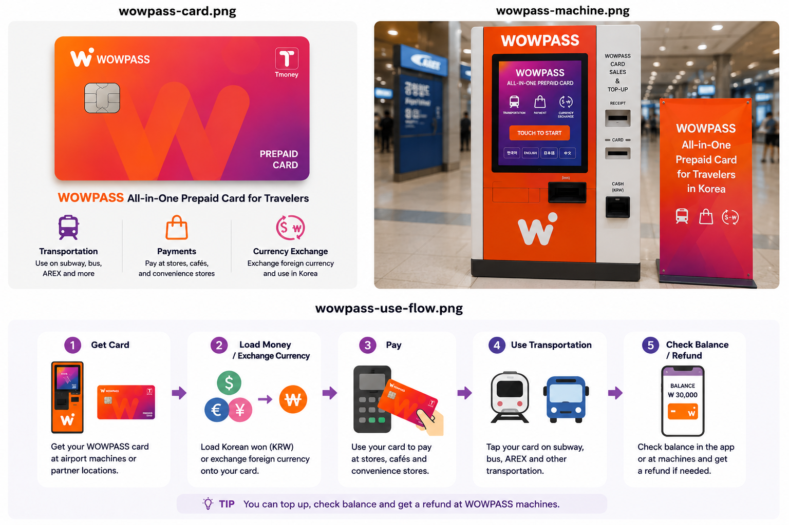
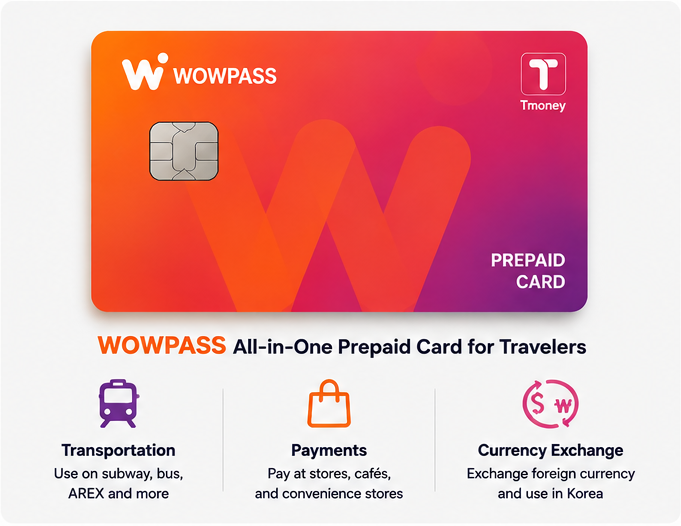
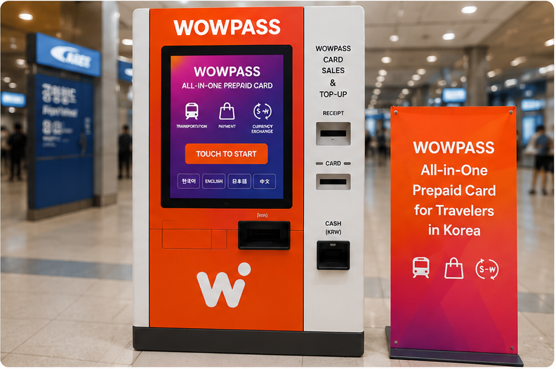
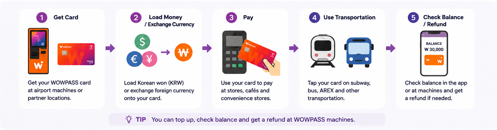

Choose T-money if...
- You only need subway and bus
- You want the simplest and cheapest option
- You are staying for a short trip
- You do not need currency exchange
KOREA TRAVEL CARD GUIDE
Which card should you use in Korea? Compare transportation, payments, currency exchange and tourist convenience before you arrive.

30-second decision guide


| Feature | WOWPASS | T-money |
|---|---|---|
| Subway | Yes | Yes |
| Bus | Yes | Yes |
| Taxi | Yes | Yes, in many taxis |
| Convenience stores | Yes | Limited / some stores |
| Restaurants | Yes | No |
| Shopping | Yes | No |
| Currency exchange | Yes | No |
| Foreign tourist focused | Yes | No |
| Best for | Tourists who need payments and exchange | Travelers who only need transport |
All-in-one travel card
WOWPASS is a prepaid card for foreign visitors in Korea. It can be used for transportation, payments and currency exchange. It is useful for tourists who want one card for travel and spending.
Use the transit function for subway and bus rides.
Pay at many shops, cafés and restaurants.
Exchange supported currencies at eligible machines.
Manage common travel spending needs in one place.
Look for WOWPASS machines or partner locations at common arrival and tourist hubs.

Availability can change. Always confirm the latest pickup or machine location before travel.

Keep it simple
T-money is still the best option for travelers who only need public transportation, want a simple transport card, or do not need currency exchange or prepaid payment features.
WOWPASS FAQ
No. WOWPASS combines a tourist-focused prepaid payment card with transportation and currency exchange features, while T-money is primarily a transportation card.
Yes. WOWPASS includes a transportation function that can be used on Korean subways and buses after you add transit balance.
It depends on your trip. WOWPASS offers more payment and exchange features, while T-money is simpler for travelers who only need transportation.
Usually not for ordinary subway and bus travel because WOWPASS includes a transportation function. Make sure the transportation balance is loaded separately when required.
Yes, you can use its prepaid payment balance at many card-accepting shops and restaurants in Korea. Acceptance can vary by merchant.
Yes. Supported WOWPASS machines allow visitors to exchange eligible foreign currencies and load value onto the card; supported currencies and conditions can change.
WOWPASS cards are generally available from machines or partner locations in airports and major tourist areas. Confirm the latest location before travel.
WOWPASS pickup or issue options may be available at Incheon Airport. Availability and operating details can change, so check the latest official location information before arrival.
Its transportation function can be used on supported transit systems beyond Seoul, and prepaid payments may work at participating merchants across Korea. Coverage and services can vary by area.
Refunds may be available for eligible remaining balances, subject to WOWPASS rules, fees and the type of balance. Check the current refund instructions before leaving Korea.
It can be convenient on a short trip if you expect to make frequent payments or exchange currency. T-money may be simpler if you only plan to use public transportation.
Choose WOWPASS for an all-in-one tourist card with payments and exchange features. Choose T-money if you want the simplest low-cost option for subway and bus travel.